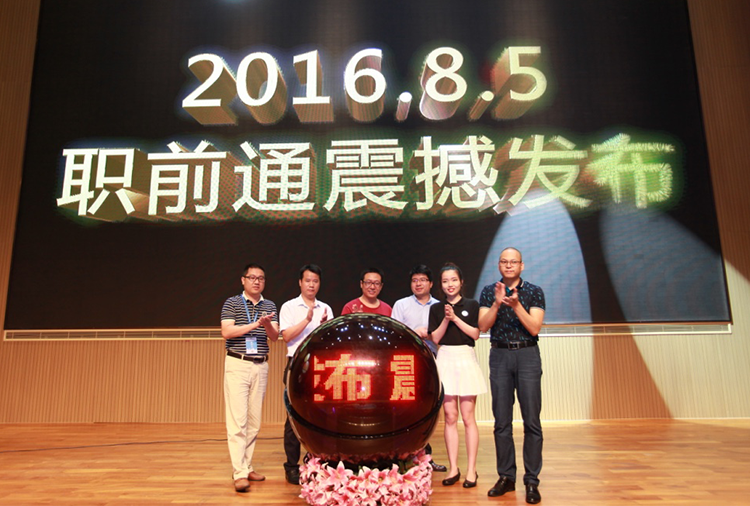
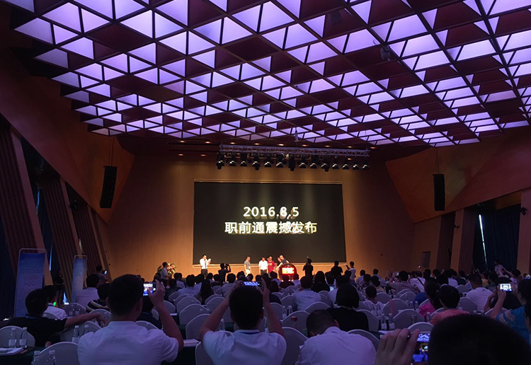

职前通产品发布会圆满落幕，开启实习就业新时代
2016-08-05
- 2016年8月5日，职前通产品发布会在深圳隐秀山居大酒店隆重召开。300多名企业精英、高校领导、媒体代表齐聚一堂，华 为、阿里、腾讯、TCL、大疆等名企大咖以及深圳大学、海南师范大学等院校代表亲临发布会现场，共同见证职前通的正式上线。
- 
- 本次发布会现场典雅庄重，大咖云集，主题演讲、启动仪式、授牌签约、产品体验等环环相扣，热潮不断，精彩纷呈。
- 
- 发布会伊始，职前通CEO刘建华先生深入浅出地介绍了职前通全线产品，用“一种模式、三大模块、八大服务体系”高度概括了职前 通的产品方案，表示要通过双向认证模式重新定义实习就业市场，并通过职业测评、求职学院和实习联盟一站式解决大学生就业迷 茫、技能低和实习就业机会少的问题。 演讲过后，刘总携同高校代表深圳大学与江西应用技术职业学院、企业代表腾讯与顺丰、学生代表等共同启动水晶球，标志着职前 通从这一刻起，正式上线了！
- 从2016年4月立项开发，到今天的正式上线；从零客户零基础，到成功签约50多所高校、3000家认证企业；100多个日夜， 我们不断推陈出新，努力为用户提供更优的体验，得到了首批用户的广泛认可与支持。他们亲临发布会并参与了授牌仪式，他们分 别是腾讯、中信银行、平安集团、响巢看看、金地物业、海南师范大学、江西应用技术职业学院、南昌工程学院、湖北科技学院、 湖北文理学院、天津工程职业技术学院、苏州工业职业技术学院、合肥学院、兰州交通大学、百色学院、长沙学院、广东交通职业 技术学院、五邑大学计算机学院、五邑大学信息工程学院、中山火炬职业技术学院、广州城建职业学院、仲恺农业工程学院、海口 经济学院等。
- 在此，特别鸣谢出席职前通发布会的各位嘉宾，正是有了你们每一位嘉宾的支持，才推动了本次发布会的顺利进行 和圆满落幕，更为我们后续的产品优化与市场拓展奠定了坚实的基础。